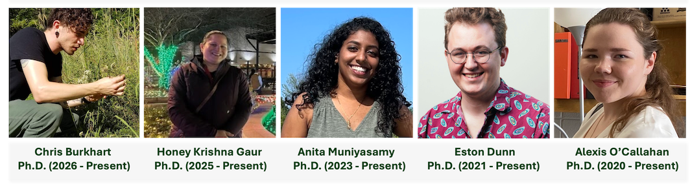

People
Current Lab Group

Alexis O’Callahan, Ph.D. in Environmental Dynamics (expected in spring 2027)
J. Eston Dunn III, Ph.D. in Environmental Dynamics (expected in summer 2027)
Abaranjitha Muniyasamy, Ph.D. in Biology (expected in fall 2027)
Honey Krishna Gaur, M.S. and Ph.D. in Biology (expected in fall 2030)
Chris Burkhart, Ph.D. in Biology (expected in fall 2031)
Brighton Harris, B.S. (Honors Student) in Biology (expected in spring 2028)
Ivan Wong, B.S. (Honors Student) in Biology (expected in spring 2028)
Alumni
Postdoctoral Scientists
Dr. Mitchell Pruitt, Visiting Assistant Professor (2024 - 2025)
Dr. Lilia Stemet, BIOLEAPS Project Coordinator (2025)
Dr. Jessica Moon, Postdoctoral Associate (2015-2018)
Dr. Bhaskar Mitra, Postdoctoral Associate (2014-2015)
Graduate Students
J. Eston Dunn III, M.S. in Statistics and Analytics with Concentration in Computational Analytics (Dec. 2026)
Ayanna St. Rose, Ph.D. in Biology (Dec. 2023)
Yang Kai Tang, M.S. in Statistics and Analytics with Concentration in Biological Analytics (May 2023)
Ayanna St. Rose, M.S. in Statistics and Analytics with Concentration in Biological Analytics (May 2022) | Graduate Certificate in Sustainability (May, 2022)
Megan Reavis, Ph.D. in Biology (Dec. 2021) | Graduate Certificate in Sustainability (2020)
Renee Sniegocki, M.S. in Biology (May 2020)
Undergraduate Students
Honors Thesis
C. Connor Perkins, Honors Student (2018 - 2019), Graduated cum laude
K. Elizabeth Johnson, Honors Student (2017 - 2019), Graduated cum laude
Jackson Massanelli, Honors Student (2015 - 2017), Graduated summa cum laude
Carly Konzelman, Honors Student (2015 - 2016), Graduated magna cum laude
NSF REU/IRES
Kristina Jolly, NSF-REU Participant (summer 2026)
Yuna O’Brien, NSF-REU Participant (summer 2026)
Kenicia Godinet, NSF-REU Participant (summer 2023)
Emma Kellogg, NSF-REU Participant (summer 2023)
Brian Jose Martinez-Soler, NSF-REU Participant (summer 2022)
Marvin Mendoza, NSF-REU Participant (summer 2021)
Abby Rutrough, NSF-IRES Participant (summer 2018)
Madeleine M. McDonnell, NSF-REU Participant (summer 2016)
Daniel Bereznyakov, NSF-REU Participant (summer 2015)
Senior Thesis
Lauren Mayden, Senior Thesis (2023)
Luke Kirkpatrick Senior Thesis (2023)
Chyann Rhodes Senior Thesis (2023)
Madison Moss Senior Thesis (2023)
Kailey Hutcherson, Senior Thesis (2021)
Megan Phillips, Senior Thesis (2021)
Ashley Kiersey, Senior Thesis (2021)
Leiah Brown, Senior Thesis (2021)
Heber Rosa, Senior Thesis (2020)
Ashley Bailey, Senior Thesis (2019)
Michael McGibbony, Senior Thesis (2019)
Julie Stoynaoff, Senior Thesis (2019)
John Strange, Senior Thesis (2019)
Jalyn Lewis, Senior Thesis (2018)
Jade Reagan, Senior Thesis (2018)
Megan Rowe, Senior Thesis (2018)
Caroline Forster, Senior Thesis (2017)
Tyler Alexander, Senior Thesis (2017)
Paige Kirklin, Senior Thesis (2017)
Aubry Champlin, Senior Thesis (2017)
Taylor Ping, Senior Thesis (2016)
Brandon Main, Senior Thesis (2016)
Stefany Sierra, Senior Thesis (2016)
Research Hours
Jeffery Bradford, Honors Research Hours (2023 - 2024)
Bonnie Champion, Research Hours (2020 - 2021), Senior Thesis
Cody Schwieso, Research Hours (2019)
Caroline Forster, Research Hours (2017 - 2018)
Clint Bush, Research Assistant (fall 2016)
Naithani Lab Affiliate
These materials are not endorsed, approved, sponsored, or provided by or on behalf of the University of Arkansas, Fayetteville.